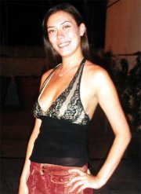

|  Q
& A with Melinda...
Q: What
are your goals in the near future?
A: I have a lot, but one of them is
to own my own bar.
Q: Where do you currently work and
how do you like it?
A: I currently work at the Pointe in the aroma
center. I really enjoy working there although I wish that they can give
me a raise once in a while, goddamnit! (subtle hint)
Q: Any pros and cons of hanging out in K-town?
A: I don't hang out too much in ktown these
days, but let's see... The good thing about hanging out in ktown is that
you can smoke and drink and do whatever you want until very late at night.
The bad thing is that you can smoke and drink and do whatever you want
until very late at night. hehe
Q: Where do you like to hang out in K-town?
A: Well, like I said, I really don't hang
out in ktown all that much, but if I did, it would probably be at the
Pointe! (I saw that coming) But the only thing is that I would go to noh-rae-bangs
instead b/c you can have more fun in there...
Q: What do you like to do in your spare time?
A: Sometimes I just like to lay out, other
times I enjoy doing active things like, taking a couple of laps or shopping!
(Power shopping that is...)
Q: What are your turn-ons and turn-offs in
a guy?
A: Uh oh. Ok. Turn-ons are guys who
listen and do what I say. But at the same time don't let me walk
all over them. I want them to be nice but be reasonable. (guys are
you listening?)
Turn-offs are guys who are rude to everybody else but me. He should
be nice to everyone. He needs to be sincere, and should be able
to control himself. I hate guys with a bad temper.
Q: Are you single?
A: Not right now, (I have nothing to live
for...) but I'm not married though... (hehe, Melinda let me buy you a
drink...) |